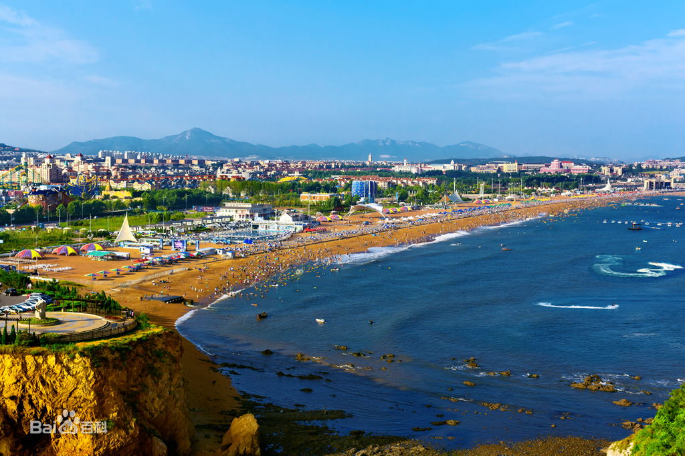
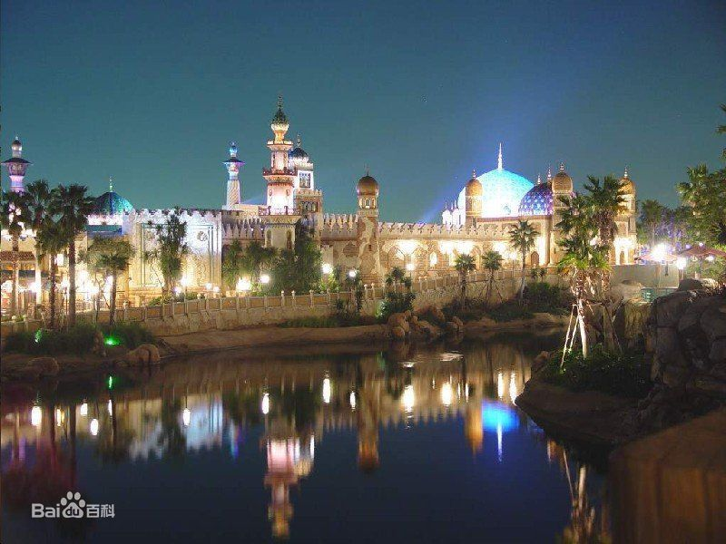

旅游景点
▲星海广场
星海广场（Xinghai Square）位于中国辽宁省大连市沙河口区，是大连市西南部的露天广场、纪念香港特别行政区回归中国的主要建设工程，也是大连市的标志建筑之一。
星海广场始建于1993年7月16日；于1997年6月30日投入使用；于2018年12月18日进行亮化工程。
截至2019年4月，星海广场总占地面积为176万平方米，是全亚洲最大的广场。
▲金石滩国家旅游度假区
金石滩，大连市金州区功能区之一，是国家级风景名胜区、国家级旅游度假区、国家AAAAA级旅游景区、国家级地质公园，曾被CNN评价为中国40个最美景点之一。
金石滩的陆地面积62平方公里，海域面积58平方公里，三面环海，冬暖夏凉，气候宜人，凝聚了3-9亿年地质奇观，有“神力雕塑公园”之美誉。
金石滩的主要景点有黄金海岸、金石园、滨海地质公园、金石蜡像馆、生命奥秘博物馆、发现王国等。
金石滩现已成为人们避暑消夏的首选之地。
▲发现王国主题公园
发现王国（又称发现王国主题公园，Dalian Discoveryland Theme Park）位于辽宁省大连市金石滩国家旅游度假区中的金石滩黄金海岸上，其作为一个接轨国际、领先国内、东北唯一的主题公园，堪称国人自己的“迪士尼”。
公园分为七大主题：发现广场、传奇城堡、魔法森林、金属工厂、神秘沙漠、疯狂小镇和婚礼殿堂，占地47万平方米，比香港迪士尼还要大出近三分之一。
此外，发现王国还投资拍摄了自主知识产权动画片，该片计划拍摄100集，总投资上千万，采用了强大的制作班底。